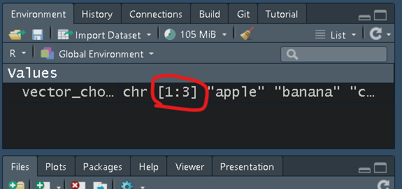
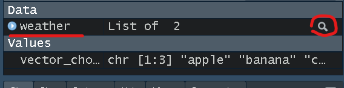
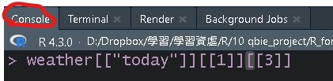
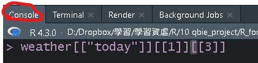
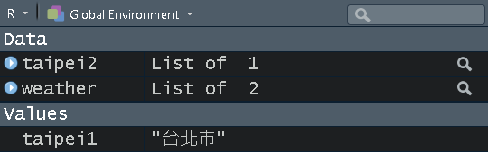

Chapter 4 基礎篇_元素的基礎操作
4.1 選取
4.1.1 取出vector中的元素
vector_choose <- c("apple", "banana", "cat")
# 有多少位置可選(該元素的長度)：
length(vector_choose)
# 取出apple
vector_choose[[1]]
head(vector_choose, 1) ## 取出vector_choose向量的前n個元素
# 取出banana和cat
vector_choose[c(2, 3)]
vector_choose[c(2:3)]
tail(vector_choose, 2) ## 取出vector_choose向量的後n個元素4.1.2 取出list中的元素
weather <-
list(
today = list(
list("台北市", c(highest_temp = 25)),
list("新北市", c(highest_temp = 24))
),
tomorrow = list(
list("台北市", c(highest_temp = 30)),
list("新北市", c(highest_temp = 28))
)
)
# 查看整個list的架構或如下圖方式點選
print(weather)若想較簡易得知list中元素位置，可以直接點選(如下圖)
  

# 取出today當中的台北市 (若有名稱時[[""]] 和$ 可以相互使用)
weather[["today"]][[1]][[1]]
## or
weather$today[[1]][[1]]
# 比較[[]] 和 [] 差別
taipei1 <- weather$today[[1]][[1]]
taipei2 <- weather$today[[1]][1]
taipei1
taipei2上述可以看到選取資料時有[[]] 和 []兩種，差別在於:
[[]]: 拿出某個物件值。weather$today[[1]][[1][[1]]將weather中today裡的台北市物件值拿出來，因此只留下單純的值。
[]: 留下某個物件值。weather$today[[1]][[1][1]只留下weather中today裡的台北市，因此原先資料結構和名稱仍會留下。
如下圖taipei2還是list的結構，但taipei1是單純的Value。

# 取出tomorrow當中新北市的highest_temp值(25) 並保留highest_temp的名稱
weather$tomorrow[[2]][[2]]
weather$tomorrow[[2]][[2]][1]
# 取出tomorrow當中新北市的highest_temp值(25) 並捨棄highest_temp的名稱
weather[["tomorrow"]][[2]][[2]][["highest_temp"]]
## or
weather$tomorrow[[2]][[2]][[1]]4.1.3 取出data.frame中的元素
#取得R內建資料
data(iris)
# 查看欄位名稱
names(iris)
#想取出第一列(row)第二行/欄(column)的數值 (直行橫列)
iris[1, 2] # [row, column]
#想取出第一、三行的資料
iris_c1_1 <- iris[, c(1, 3)]
## or
iris_c1_2 <- iris[, c("Sepal.Length", "Petal.Length")] # 用欄位名稱選取
## or
c13 <-c ("Sepal.Length", "Petal.Length")
iris_c1_3 <- iris[, c13]
## or
iris_c1_4 <- iris[, c(T, F, T, F, F)] # 用布林變數選取
# 若只想取出一行，除了上述方法也可以用「$」選取
iris_c1_5 <- iris$Sepal.Length # 用欄位名稱選取4.2 新增
若要新增元素、首先我們必須知道元素的位置，也就是上一章節詳細介紹元素的部分，
1. 找出不存在的位置
2. 給予這個不存在位置一個值
例如，若想將範例vector_add中新增一個"4":
vector_add <- c("apple", "banana", "cat")
vector_add
# 1.找出不存在的位置
## vector_add 只有三個元素、因此第四個位置的元素是不存在的
vector_add[[3]] # 存在"cat"
vector_add[[4]] # 不存在元素(會出現Error)
# 2. 給予這個不存在位置一個值
## 因此若想在vector_add加上第四個元素"4"，
## 需要將"dog" 指派到vector_add的第四個位置
vector_add[[4]] <- "4"
vector_add
# 也可以新增多個元素
vector_add1 <- c("apple", "banana", "cat")
vector_add1[4:6] <- c("4", "5", "6")
vector_add1
## or
vector_add2 <- c("apple", "banana", "cat")
vector_add2[c(4, 6 , 7)] <- c("4", "6", "7") # 此時第5個位置會變成NA
vector_add2其他list或data.frame的新增也是類似相同概念
4.3 替換
若要替換元素、首先我們還是必須先知道要替換元素的位置，
1. 找出需要替換元素的位置
2. 給予這個需要替換元素的位置另一個值
例如，若想將範例vector_replace中原先的"banana"，替換成"2":
vector_replace <- c("apple", "banana", "cat")
vector_replace
# 1.找出需要替換元素的位置
## vector_replace "banana"是在第二個位置
vector_replace[[2]] # 存在"banana"
# 2. 給予這個需要替換元素的位置另一個值
## 因此若想在vector_replace加上第四個元素"4"，
## 需要將"dog" 指派到vector_replace 的第四個位置
vector_replace[[2]] <- "2"
vector_replace
# 也可以替換多個元素
vector_replace1 <- c("apple", "banana", "cat")
vector_replace1[1:2] <- c("1", "2") # 此時"apple"和"banana"會變成"1"、"2"
vector_replace1
## or
vector_replace2 <- c("apple", "banana", "cat")
vector_replace2[c(1, 3)] <- c("1", "3") # 此時"apple"和"cat"會變成"1"、"3"
vector_replace2
# 也可以同時新增和替換元素
vector_replace3 <- c("apple", "banana", "cat")
vector_replace3[c(1, 3, 4)] <- c("1", "3", "4")
vector_replace3其他list或data.frame的替換也是類似相同概念
4.4 刪除
若要刪除元素有兩種方式，
同樣先找出需要刪除元素的位置
第一種:
取出需要的元素，再回存自己(沒有取出的，即是刪去)
第二種:
取出不需要的元素，用-回存自己(回存-即是刪去)(只能用在vector)
例如，若想將範例vector_delete中原先的"apple"和"cat"刪除:
vector_delete <- c("apple", "banana", "cat")
vector_delete
# 1.找出需要刪除元素的位置
vector_delete[c(1, 3)]
# 2. 取出需要的元素("banana")再回存自己(沒有取出的，即是刪去)
vector_delete1 <- vector_delete[[2]]
vector_delete1
## or 取出不需要的元素("apple"、"cat")
vector_delete2 <- vector_delete[-c(1, 3)]
vector_delete2另外list的形式是用NULL來刪除，
類似替換的概念，但替換成NULL(空的)
例如，若想將範例weather中原先的"台北市"刪除:
weather <-
list(
today = list(
"台北市",
c(highest_temp = 25)
)
)
weather
# "台北市"的位置
weather$today[[1]]
# 替換成NULL(刪除)
weather$today[[1]] <- NULL
weather4.5 命名
若要對元素進行命名，需使用"name"=value，
在命名時只能夠使用=，不能使用<-
另外在命名時，也可以使用`，如果是常規的命名，也可以都不加
或者可以使用setNames、names()相關函數
以向量為例，想對1、2、3分別命名為apple、banana、cat
vector_name <- c(1, 2, 3)
vector_name
# 方法1
vector_name1 <- c("apple" = 1 , "banana" = 2 , "cat" = 3)
vector_name1
# 方法2
vector_name2 <- c(`apple` = 1 , `banana` = 2 , `cat` = 3)
vector_name2
# 方法3
vector_name3 <- c(apple = 1 , banana = 2 , cat = 3)
vector_name3
# 方法4
vector_name4 <- setNames(c(1, 2, 3), c("apple", "banana", "cat"))
vector_name4
# 方法5
vector_name5 <- c(1, 2, 3)
names(vector_name5) <- c("apple", "banana", "cat")
vector_name5其他list或data.frame的替換也是類似相同概念
另外若元素有命名，前面的選取、新增等操作中，也可以用命名的文字來取代位置
vector_name <- c(1, 2, 3)
vector_name[[1]]
vector_name1 <- c("apple" = 1 , "banana" = 2 , "cat" = 3)
vector_name1["apple"]